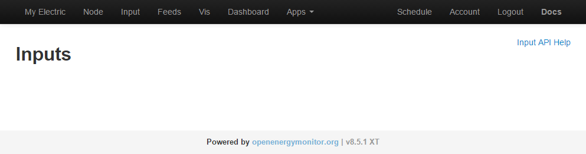
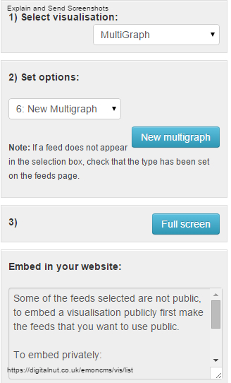
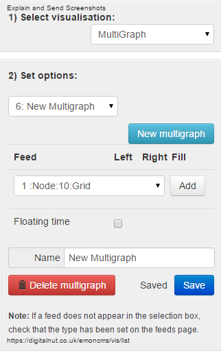

Just git cloned emoncms and switched to extended branch, and although most features appear to work OK (except multigraphs - which have already been reported in another thread), I've noticed that none of the inputs are being displayed in the 'inputs' page. (see screenshot)
Despite this, all of my 29 feeds are still being updated OK and the data is correct.
Paul

Re: v8.5.1 XT - No inputs displayed [SORTED]
I did a clean install (git clone) of v8.5 on a spare machine. I set up inputs and feeds, then switched to 8.5.1 XT. I get the same results, i.e. input screen is blank, feeds are updating with correct values.
I noticed another anomaly. My realtime graphs go blank when the 1 hour button is clicked. The 30, 15, 5 and 1 minute buttons work correctly. Same behavior on both the dashboard, and the Vis page.
No change after running for ~2 hours, The 1 hour button still produces blank realtime graphs.
Re: v8.5.1 XT - No inputs displayed [SORTED]
Thanks Bill, there's no errors showing in the php log, but no doubt it will get sorted as Chaviero works through the code.
Re: v8.5.1 XT - No inputs displayed [SORTED]
Paul, do you see the same behavior with your realtime graphs? (1 hr button makes the graph go blank)
Re: v8.5.1 XT - No inputs displayed [SORTED]
No, I can see the 1hr display on realtime graphs OK, both vis & dashboard.
However multigraphs are not displaying in 'vis' although they do in dashboards, the two screenshots below show the difference between v8.5.1 XT & v8.5
(This multigraph problem I believe is reported here & is being sorted by Chaveiro)

Re: v8.5.1 XT - No inputs displayed [SORTED]
I'd forgotten about the Multigraphs. Yep, they're broken...
Re: v8.5.1 XT - No inputs displayed [SORTED]
Multigraphs fix was commited now.
No inputs is very strange, that part of code was not touched in XT. What browser are you using?
Re: v8.5.1 XT - No inputs displayed [SORTED]
Hi Chaviero,
I'm using Firefox 38.0.5
Bill
Re: v8.5.1 XT - No inputs displayed [SORTED]
I use FF too, no problem.
If it's not a bad installation, i could be browser cache, try reloading by CTRL+F5.
Also try on other browser like chrome.
If you still cant see it, in chrome press F12, reload the page and see if there are errors in console window.
Re: v8.5.1 XT - No inputs displayed [SORTED]
Clearing the browser's cache was the first thing I did. No help there.
I'm going to do a bare metal install to make sure I don't have any remnants of an earlier install on the drive.
Will let you know how it goes...
Re: v8.5.1 XT - No inputs displayed [SORTED]
I'm using Google Chrome browser - and yes I had cleared the cache.
I've also tried Internet Explorer and Firefox - still the same - blank inputs page.
Checked the Console window, and I see the following error listed;
SyntaxError: expected expression, got '<' view 309:44
If I open up the error, I see the attached file, with line 309 highlighted.
Paul
PS, yes the latest git pull has fixed Multigraphs - thanks.
Re: v8.5.1 XT - No inputs displayed [SORTED]
The error is:
<b>Notice</b>: Undefined index: engines_hidden in <b>/var/www/emoncms/Modules/input/Views/input_view.php</b> on line <b>272</b><br />
Your config file is not updated to XT version.
Start with the default.settings.php and apply your new setting and save it as settings.php.
Re: v8.5.1 XT - No inputs displayed [SORTED]
Chaveiro, yes that was the issue!
I hadn't noticed that the settings.php file had changed....
The extended branch adds some really interesting features, for example, dashboard selection is now made via a menu/submenu selection, and consistent with the apps menu/submenu, and it's much easier to use on a mobile device too.
I've also noticed that it's fixed a number of issues that were reported in Github for v8.5;
However when using a mobile device, if you try to switch from one 'app' submenu to another submenu item (eg 'My Electric' to 'My Solar'), then the main menu does not collapse after the selection is made. Bug apparent on Android phone, iPhone & iPad and was also present in v8.5.
It's strange however that you can switch from one 'Dashboard' submenu to another without the same problem (when switching between different dashboards using the submenu, the menu collapses afterwards - as it should!)
Nice work Chaveiro
Paul